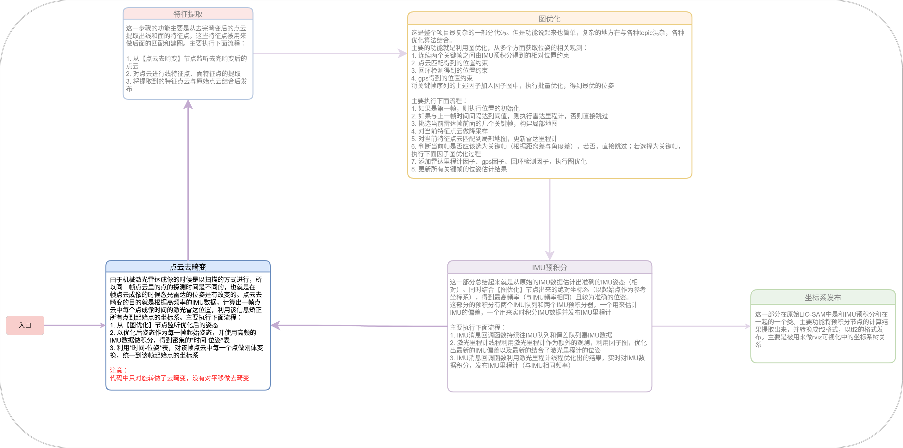
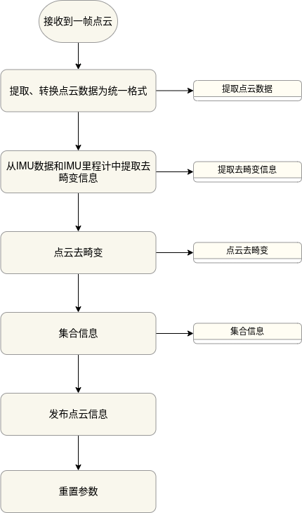
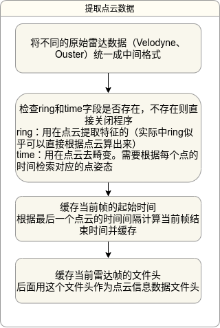
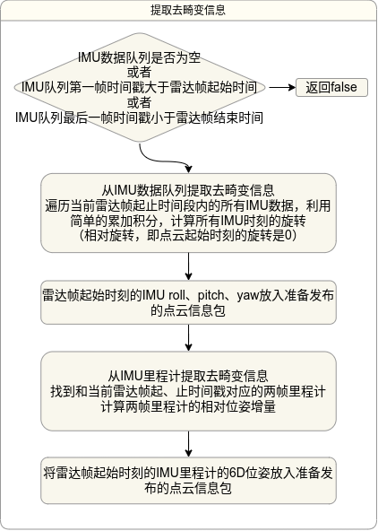
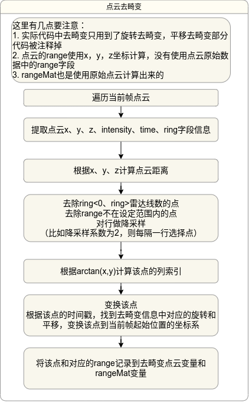

Simple-LIO-SAM——（五）点云去畸变模块
- ⭐ Zeal's Blog
- 🛠 知乎专栏
- 🌀 项目仓库
总述

点云去畸变模块（imageProjection.cpp文件，文件命名应该是继承了LeGO-LOAM，其实我觉得应该叫做数据预处理模块更合适）主要有以下几个作用
- 去除激光雷达点云的运动畸变
- 检索每一帧点云对应的IMU输出角度、IMU里程计位姿（发布自ImuPreintegration），以便MapOptimization模块用这些信息作为该帧点云的初始位姿
- 转换点云格式，计算
Range字段，方便特征提取模块进行边缘点、平面点提取
从总体流程图不难看出，点云去畸变模块是整个算法框架的入口。点云去畸变模块的总体流程如下图：

消息订阅及发布

从上图可以看到，这个模块订阅点云和IMU的原始数据，输出一个以CloudInfo格式的topic。下面详细讲解CloudInfo这个数据格式。
CloudInfo数据类型
经过去畸变的点云通过算法自定义的数据格式Simple-LIO-SAM/msg/CloudInfo.msg发布；特征提取模块也是将特征点放入这个自定义数据格式发布。
1 | # Cloud Info |
这里主要是前面几个数组类型会比较难理解，主要是要知道在去畸变模块中，将所有点的range信息（也就是点距离雷达的距离）拉成一个一维的数组，即float32[] point_range。 同时，cloud_deskewed里存储的是去完畸变后的点云，里面点的顺序与point_range的顺序是一样的。
cloud_corner和cloud_surface两个字段在imageProjection模块中没有被放置数据。特征提取模块会将边缘点、平面点放置在这两个字段中，同时将cloud_deskewed字段清空。
功能解读
IMU及IMU里程计处理
ImageProjection监听IMU原始数据与从ImuPreintegration（后面会详细讲解这个模块）发布出来的IMU里程计数据，分别由两个回调函数处理，对于IMU原始数据，只是简单地将其旋转到雷达坐标系后塞入缓存队列。 对于IMU历程计，则是直接塞入缓存队列。
角度插值
由于雷达点的时间戳与IMU的时间戳不可能是一一对齐，因此在使用雷达点的时间戳检索IMU的积分结果的时候，还需要进行一下插值，获取该雷达点对应的位姿
1 | // imuPointerFront为找到的IMU去畸变信息的索引 |
去畸变流程
一句话说明点云运动畸变校正：根据每一帧点云中每一个点的时间戳，计算该点到该帧点云起始点的旋转平移变换，将每一个点变换到起始点的坐标系。
要注意的是，算法中对运动畸变校正只做了旋转校正，没有做平移校正。
去畸变流程发生在点云的回调函数中
1 | // imageProjection::cloudHandler |
- 提取、转换点云为统一格式

- 提取去畸变信息

这里有几点要注意
从IMU原始数据计算每一时刻的位姿变换用的是近似算法（因为一帧点云成像时间很短，一般小于100ms）
1
2
3
4
5
6
7
8
9
10// 对角度做积分
// 再次强调，对角速度的积分不是简单的角速度乘以间隔时间
// 关于角速度的积分公式可以查阅：https://zhuanlan.zhihu.com/p/591613108
static double timeDiff;
timeDiff = currentImuTime - imuTime[imuPointerCur-1];
imuRotX[imuPointerCur] = imuRotX[imuPointerCur-1] + angular_x * timeDiff;
imuRotY[imuPointerCur] = imuRotY[imuPointerCur-1] + angular_y * timeDiff;
imuRotZ[imuPointerCur] = imuRotZ[imuPointerCur-1] + angular_z * timeDiff;
imuTime[imuPointerCur] = currentImuTime;
++imuPointerCur;对于速度较低，角度变化不那么剧烈的行驶系统，即使不做点云畸变校正也没有问题
- 对点云做去畸变处理

- 提取有效点云并集合其他信息
这里主要是将经过去畸变处理后记录下来的有效点进行数据转换，并把各种信息填入准备发布的cloud_info消息中。
- 发布点云